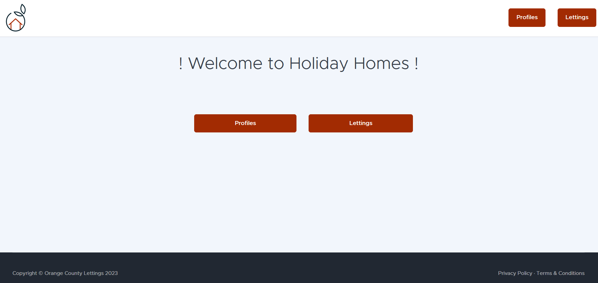
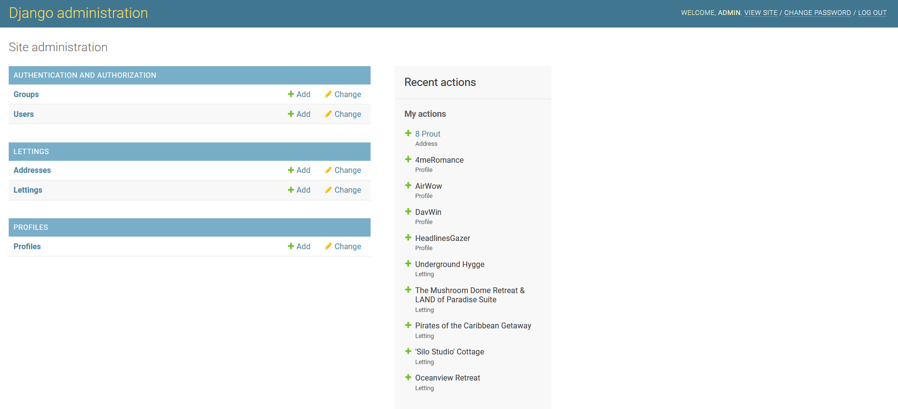
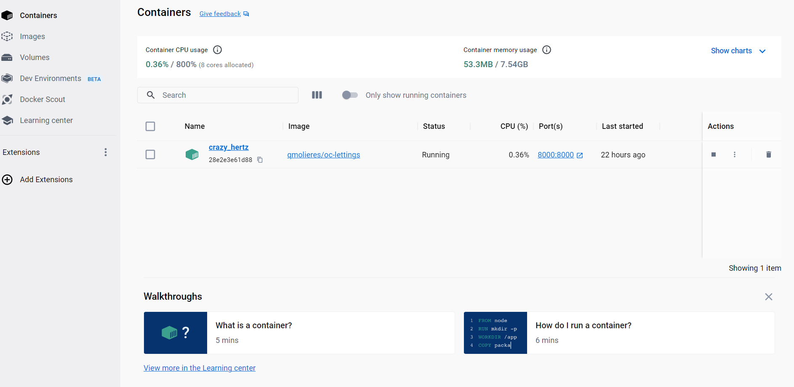

VI. Guide d’utilisation en Local et Création de l’Image Docker
Ce guide vous accompagnera dans l’utilisation du site en local et la création de l’image Docker pour votre plateforme. Il couvre l’activation de l’environnement virtuel, le lancement du site en local, l’utilisation de la page d’administration, ainsi que les étapes pour créer et exécuter l’image Docker localement. Suivez les instructions suivantes pour mener à bien ces opérations :
Activation de l’environnement virtuel
Selon votre système d’exploitation, l’activation de l’environnement virtuel se fait différemment. Assurez-vous que l’environnement virtuel est actif avant d’exécuter les commandes et manipulations mentionnées dans la suite de ce chapitre.
Sous Windows : Pour activer l’environnement virtuel, exécutez la commande suivante dans le répertoire où vous avez créé l’environnement :
myenv\Scripts\activateSous macOS et Linux : Pour activer l’environnement virtuel, exécutez la commande suivante dans le terminal :
source myenv/bin/activate
Lancement du site en local
Pour commencer, vous pouvez lancer le serveur en local en utilisant la commande Python :
python manage.py runserverVous pourrez ensuite accéder au site OC-Lettings via le lien http://127.0.0.1:8000/ et consulter les différents profils et locations disponibles.
Utilisation de la page d’administration
Vous pouvez accéder à la page d’administration via l’adresse http://127.0.0.1:8000/admin. Un profil administrateur est déjà créé, avec le nom d’utilisateur admin et le mot de passe Abc1234!. Une fois connecté, vous pourrez effectuer des opérations CRUD sur les différents modèles du site afin de maintenir à jour les informations présentes sur le site.
Création de l’image Docker en local
Pour créer l’image de la plateforme, il est nécessaire d’avoir un compte Docker et d’avoir installé Docker sur votre ordinateur. Une fois l’installation effectuée, exécutez Docker Desktop et entrez la commande suivante depuis le dossier de votre projet :
docker build -t votrenomdocker/oc-lettings:latest .Vous pourrez ensuite lancer votre image via la commande :
docker run -p 8000:8000 votrenomdocker/oc-lettingsVous pourrez accéder au site via l’adresse http://127.0.0.1:8000/